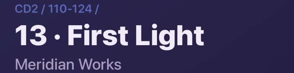
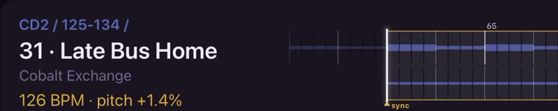
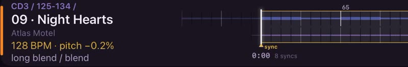
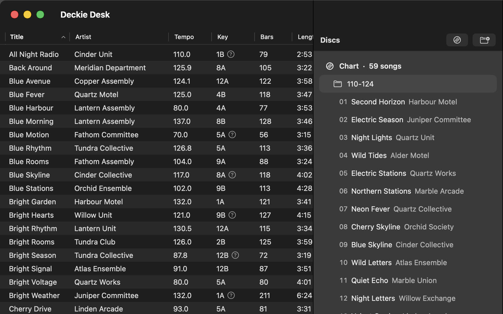

Hears the room
It names the song
From your crate, a few seconds in, with its disc, folder and track, as on your player.
Nail the mix.
An iPad beside the decks. It names the song, reads the pitch and shows what could come next.
The screens in the film are the real apps showing a demo crate file with invented song and artist names. The music was made for the film.
Other apps can name a released song. Deckie names yours.

Hears the room
From your crate, a few seconds in, with its disc, folder and track, as on your player.
Tempo and pitch
It hears how fast the deck is running and shows the tempo the song is really playing at.

Picks
Picks from your crate, best first. Each says where to set the pitch and how you could bring it in.
The wave
A wave of the end of this song over the start of the next, so you can see where they meet.
The dial
Turn it up for less obvious picks. At zero they stay in score order.

Next
Pin the one you want. Or search the rest of your crate.
Your music. Your mix.
Deckie Desk, on your Mac

Step 1
Your own files: releases, edits, bootlegs, the songs on your burned CDs.
Step 2
Tempo, key, bars and style for every song, and a fingerprint to recognise it by. No audio goes in it.
Step 3
In the order your player shows them, so the booth can say disc and track.
Step 4
AirDrop, iCloud Drive or Files. No server.
A crate is a group of your songs. It can be your whole library.
Most decks don’t know your music: turntables, older CDJs, the venue’s own gear. So you mix from memory. Deckie is a second screen that knows your crate and puts what you know in front of you, when you need it.
It is two apps on one shared core. Everything runs on your own devices.
We want working DJs to try Deckie on their own music and tell us what is wrong. You need your own music files, a Mac and an iPad.